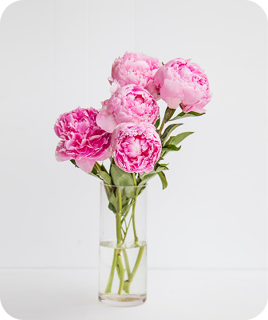
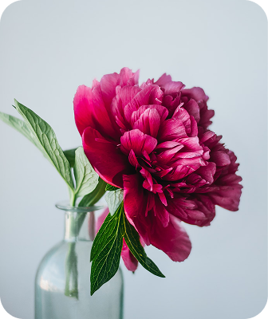

about
our story

lily smith
Owner
Our Blooms was founded in honor of Lily Smith’s loving aunts, Teresa and Beth.



Lily’s journey with flowers began in the heart of Oregon, amidst the flourishing fields of her aunts' flower farm. It was there, surrounded by the abundance of nature, that she discovered her passion for floral design. From learning the names of each bloom to understanding the delicate balance of a bouquet, she absorbed the artistry of flowers like the rich Oregon soil.
Bloom & Co. is the expression of that lifelong passion, a place where her love for flowers translates into beautifully curated arrangements that bring joy and elegance to your spaces.

From humble beginnings, Bloom&Co has grown into a beloved local destination, known for its artistic arrangements, personal service, and commitment to quality.
Discover how we can add a touch of natural beauty to your next event.